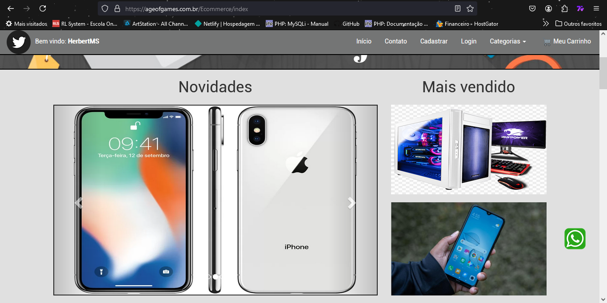

Ecommerce

Ecommerce dinâmico
Se você tem um Ecommerce ou utiliza um marketplace provavelmente já se deparou com certos problemas como: limitação de produtos listados na loja, layout genérico ou antigo, concorrência agressiva dentro da mesma plataforma, falta de autonomia para adicionar seus próprios produtos na loja.
Com nosso sistema desenvolvido de ecommerce esses problemas são resolvidos. Com nossa limitação de listagem de produtos apenas se limitando a capacidade de armazenamento da hospedegam o Ecommerce pode listar centenas, milhares de produtos e tudo sem a necessidade de qualquer conhecimento de programação, apenas utilizando a interface de gerenciamento do próprio ecommerce, por onde você adiciona informações sobre tamanho, peso, quantidade em estoque, informações tecnicas que serão exibidas na pagina do respectivo produto e etc.
Sistema de destaques
Dentro do próprio Ecommerce é possivel destacar produtos que você deseja que tenham maior visibilidade, com as áreas de Destaques, Mais vendidos e Mais procurados, os produtos mais visados ou que você quer implacar podem ser mais facilmente encontrados por quem está navegando na sua loja, dessa forma fica muito mais fácil o cliente encontrar aquilo que você está querendo mostrar para ele.
Produtos recomendados para o usuário
Pagbank

Sistema de pagamento consolidado
Além de integrações como cotação de frete, para permitir que o cliente escolha o frete que melhor atende suas necessidades, o nosso sistema de ecommerce conta com integração ao pagbank, um sistema já muito utilizado que conta com uma equipe de suporte, plataforma própria para gerenciar suas transações e uma taxa de operação dentro do praticado pelo mercado.
Slide dinâmico
Produtos destaques
Com a área destaques e mais vendido, encontrado no topo da página é possivel destacar seus principais produtos, bem como lançar tendencia quanto a novos produtos que você esteja querendo implacar na sua loja, trabalhar bem a visibilidade é um importante aspecto que se deve levar em consideração na escolha do seu ecommerce e aqui esse aspecto é levado muito a sério.
Pois como já dizia o velho ditado popular, o que não é visto, não é lembrado. E o mesmo acontece com seus produtos, eles precisam aparecer para seus compradores, para despertar a vontade da compra, ou só mostrar para aquela pessoa já interessada que você tem aquele produto disponivel pra ela.
Abas dinâmicas
Principais categorias
Pagina do Produto
Descrevendo o produto
Na pagina do produto temos uma área reservada a descrever com mais detalhes o produto em questão
com recurso de zoom na imagem é possivel acompanhar os detalhes de perto, porém mais que isso, acompanhar a avaliação que outros compradores estão fazendo sobre aquele produto na loja e ver descrições, como detalhes tecnicos para itens mais tecnologicos ou só uma descrição mais detalhada mesmo sobre produto como material que é feito, forma como foi confeccionado etc.
Aqui confere a cada loja acrescentar os detalhes que forem interessantes passar sobre o produto, bem como tamanho de embalagem e garantia.
Descrição mais detalhada
Comentarios de compradores
Carrinho de compra
Intuitivo, pratico e rapido
Nosso ecommerce conta com um sistema de carrinho bonito, pratico e muito fácil de usar o que melhora significativamente a experiencia do usuário na sua loja, o que aumenta a tendencia de que esse mesmo usuário retorne posteriormente para novas compras, devido a praticidade de encontrar os produtos e navegar pela sua loja e carrinho de compras.
Também serve como uma especie de lista de desejos já que os itens permanecem vinculados a conta criada pelo cliente então mesmo se ele sair após acrescentar algo ao seu carrinho de compras, basta logar nessa mesma conta quando voltar e suas compras voltam exatamente de onde tinha parado.
Calculando frete automaticamente
Automatizando cobranças
Como estamos falando de um ecommerce logo a ideia é a de expandir a influencia da sua empresa para além do que sua empresa pode alcançar presencialmente, e mais alcance também quer dizer mais demandas
Pensando nisso automatizamos diversas tarefas no ecommerce, para que você se preocupe o minimo possivel com trâmites que podem ser automatizados e possa estar mais livre para focar naquilo que realmente interessa, vender, expandir e crescer com a sua empresa.
Como demostrado na imagem o cliente pode acrescentar informações sobre o endereço de entrega que o mesmo prefere para receber a encomenda, o ecommerce realizará um calculo junto a serviços de entregas, considerando os produtos em questão presentes no carrinho para retornar opções de frete que melhor agrade o cliente.
Retornando opções de frete
Escolhendo as opções
Com diversas opções o cliente pode optar pelo frete que melhor atende suas necessidades naquele momento, o que garante ao ecommerce mais dinamismo e competitividade perante a outros concorrentes.
A partir da escolha do frete é gerado um link de pagamento, vinculado ao seu ecommerce através do qual o cliente poderá realizar o pagamento.

Gerenciando sua loja

Acessando o painel de controle
Através da sua conta de administrador você consegue acessar o painel de controle, é a partir daqui que você consegue ter controle de toda a dinâmica da loja, utilizando somente da interface é possivel adicionar, editar, excluir novos produtos. Gerenciar comentários, gerenciar produtos e categorias que apareceram como destaque e acompanhar as suas transações.
Listagem dos produtos
Como é possivel ver na imagem acima a primeira tela do painel de controle exibe a listagem de produtos. Estes são todos os produtos cadastrados atualmente na Loja através da listagem é possivel: editar produto, excluir produto, verificar ID (identificação do produto no sistema), bem como verificar demais detalhes do produto a partir da opção editar.
Detalhe muito importante que requer atenção é quanto ao ID exibido na listagem pois é através dele que podemos utilizar outras ferramentas que serão mais descritas a frente.
Na imagem a seguir entramos na tela de edição, que podemos acessar através do link editar presente na listagem do respectivo produto, nessa tela recuperamos todas as informações do produto, como nome, foto, preço e dimensões da embalagem. Também é através dessa tela que podemos editar tais informações.
Gerenciando sua loja
Adicionando produto na loja
Cadastrando produto
A partir da barra de navegação lateral, na parte de cadastrar produto você é direcionado para esta tela, com a mesma estrutura da pagina de editar a diferença é apenas que os campos estão preenchido com informações padrões, cujo objetivo é guia-lo na hora de inserir as novas informações do novo produto.
Aqui vale ressaltar a importância dos diametros, é muito importante que na hora de cadastrar tal produto que as informações de comprimento, altura, largura e peso sejam os mais próximos possiveis do produto já na sua embalagem, pois é a partir dessas informações passadas que o ecommerce retornará o valor de frete a ser passado para o cliente, informação essa que é recebida de serviços de entrega, que pedem essas informações para poder realizar a sua cotação.
Acompanhando as transações
Um dos recursos que o ecommerce disponibiliza é a possibilidade de acompanhar em tempo real todas as suas transações, a partir do momento em que um link de pagamento é criado uma nova transação é gerada e a cada atualização no status de pagamento o sistema de pagamento integrado ao nosso ecommerce envia uma notificação que é guardada e exibida pela loja.
Dessa forma fica muito mais prático acompanhar o status das suas transações, e poder administrar seus envios da melhor forma.
Vale ressaltar que demais ações como estorno, cancelamento etc. são realizados diretamente pela plataforma do Pagseguro.
Lista de transações
Conferindo endereço de entrega
Verificando endereço para entrega
Na lista de transações além de verificar os status de pagamento também é o local onde é possivel verificar o endereço enviado pelo cliente no horario da compra, clicando em "Endereço de entrega" da respectiva transação.
Será aberto uma janela retornando as informações necessárias para fazer o envio, como CEP, rua, bairro etc. e o serviço escolhido pelo cliente no momento da compra, sendo PAC o serviço de entrega o escolhido pelo cliente no exemplo da imagem.
Os sistemas de entrega vinculadas ao ecommerce atuam em todo territorio nacional trazendo então um maior alcance para seu empreendimento poder trabalhar com entregas em todo Brasil.
Checando produtos
Verificando produtos para fazer o envio
Tão importante como saber para onde entregar é saber o que entregar correto, para isso também na listagem de transação você consegue checar quais produtos foram comprados clicando em "Produtos", assim como em "Endereço de entrega" será aberto uma janela, mostrando todos os produtos do pedido.
Recuperando nome do produto, quantidade presente no carrinho e valor unitário.
Uma ferramenta muito importante presente na listagem de transações está na parte de cima, utilizando o filtro é possivel exibir a listagem a partir de certos parâmetros como status de pagamento para saber quantos produtos já podem ser enviados e ou filtrar por determinado comprador
É possivel atualizar status de envio através da plataforma de pagamento também, o que já dispara notificações por email para o comprador, trazendo mais transparencia para a loja.
Configurando produtos destaques
Em "Produtos em destaques" na barra lateral entramos na parte de configuração dos produtos que são exibidos através das ferramentas de destaque da loja, como: Slides dinâmicos, Abas e areas de Destaque, Mais vendidos e Mais procurados.
A configuração dos produtos em destaque é muito simples, porém requer que peguemos os ID's de cada produto que queremos exibir a partir de listagem de produtos, que é o número que aparece a esquerda de cada produto, utilizando ele como referência podemos alterar quais produtos serão exibidos e em que área, bastando para isso colocar o determinado ID no respectivo campo e clicar no botão "Atualizar" do respectivo campo.
Produtos Destaques
Gerenciando comentarios
Por fim tambem é possivel gerenciar os comentarios que são feitos na loja indo em "Comentarios" assim como nas transações são listados todos os comentarios podendo ser realizado filtro para encontrar determinado comentario ou só recolher feedbacks de determinados produtos, bem como apagar comentarios se preciso for.